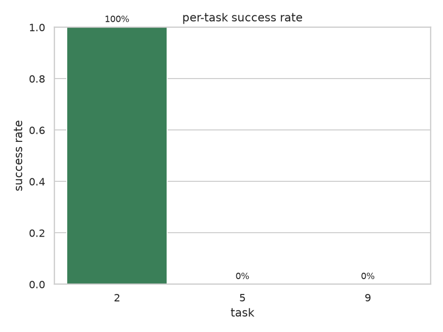
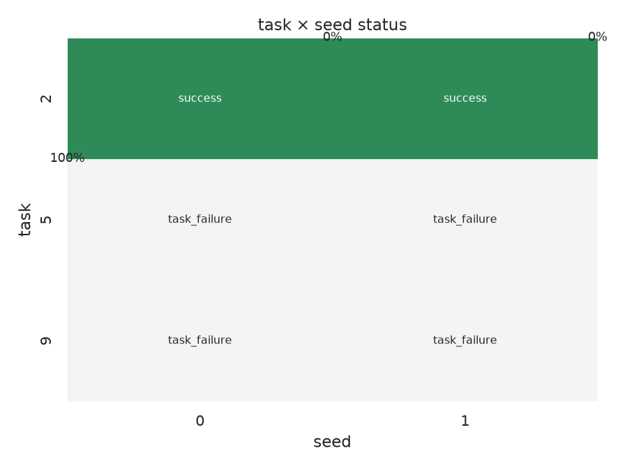
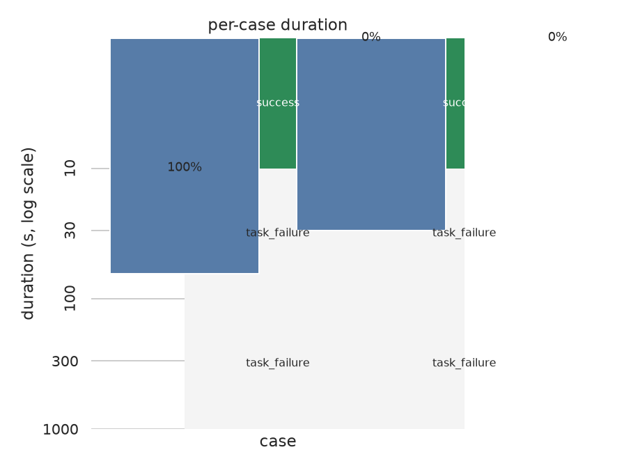

6 planned case(s). The summary CSV/JSON alongside is the authoritative artifact.



| run_id | job_id | case_id | task_id | task_index | seed | participant | attempt | status | task_success | duration_s | termination_reason | error_source | success_source |
|---|---|---|---|---|---|---|---|---|---|---|---|---|---|
| probe-real-matrix-c1-20260918-031729-741501 | job_0001 | libero_object:t2:s0 | libero_object:2 | 2 | 0 | rpent_libero | 1 | success | True | 108.44 | None | None | rpent.audit.terminated |
| probe-real-matrix-c1-20260918-031729-741501 | job_0002 | libero_object:t2:s1 | libero_object:2 | 2 | 1 | rpent_libero | 1 | success | True | 275.26 | None | None | rpent.audit.terminated |
| probe-real-matrix-c1-20260918-031729-741501 | job_0003 | libero_object:t5:s0 | libero_object:5 | 5 | 0 | rpent_libero | 1 | task_failure | False | 64.26 | native RPent reported cell unsolved | rpent.task | None |
| probe-real-matrix-c1-20260918-031729-741501 | job_0004 | libero_object:t5:s1 | libero_object:5 | 5 | 1 | rpent_libero | 1 | task_failure | False | 31.27 | native RPent reported cell unsolved | rpent.task | None |
| probe-real-matrix-c1-20260918-031729-741501 | job_0005 | libero_object:t9:s0 | libero_object:9 | 9 | 0 | rpent_libero | 1 | task_failure | False | 53.67 | native RPent reported cell unsolved | rpent.task | None |
| probe-real-matrix-c1-20260918-031729-741501 | job_0006 | libero_object:t9:s1 | libero_object:9 | 9 | 1 | rpent_libero | 1 | task_failure | False | 29.87 | native RPent reported cell unsolved | rpent.task | None |